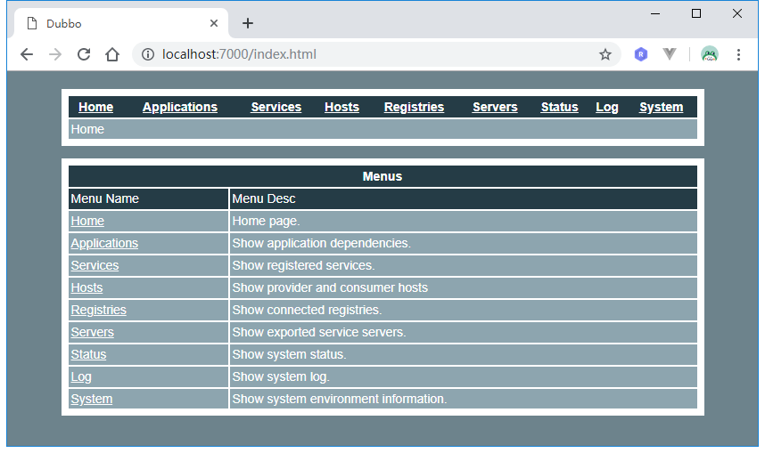
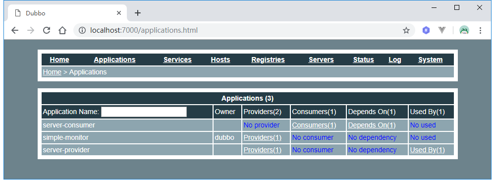
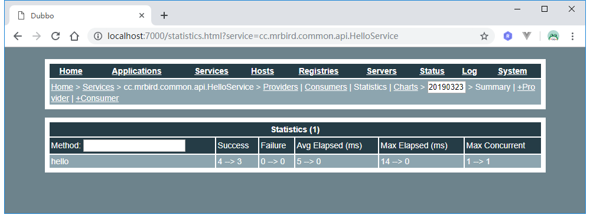
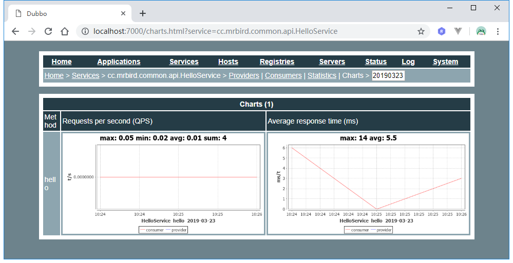
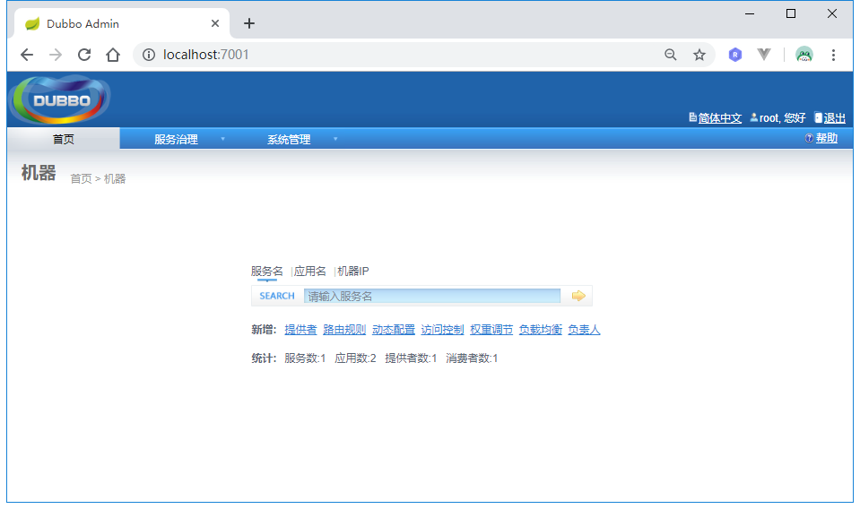
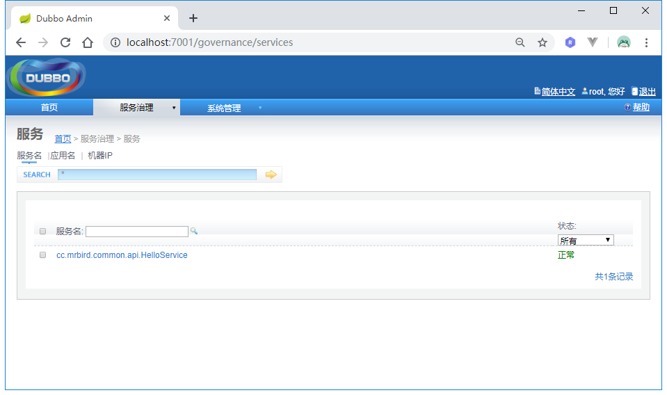
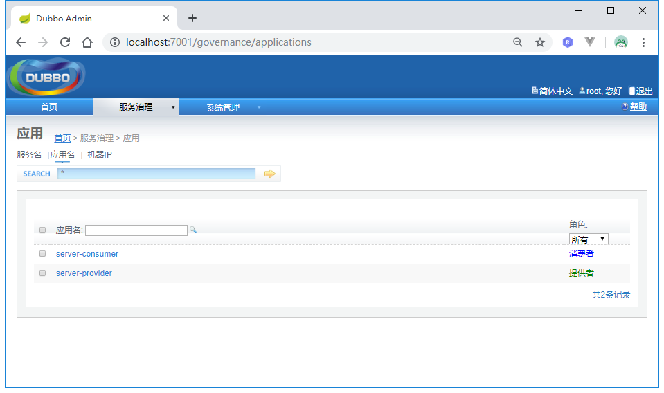
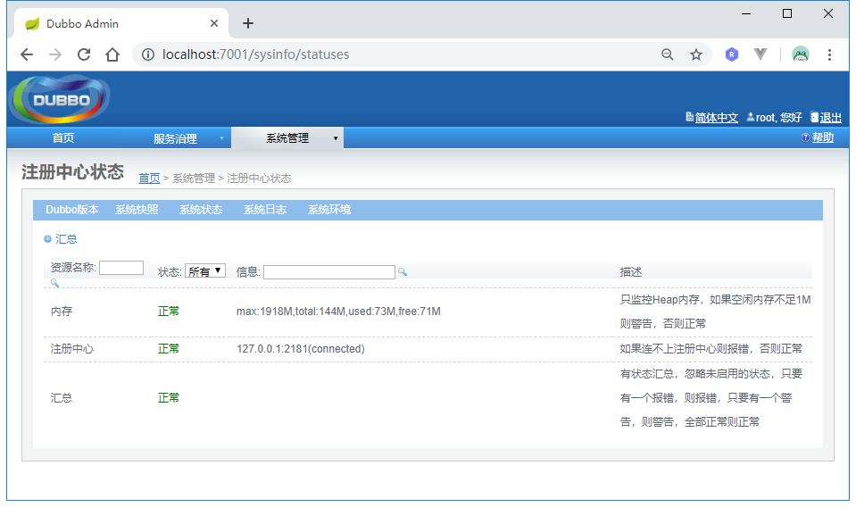

Dubbo给我们提供了dubbo-admin和dubbo-monitor-simple用于监控Dubbo服务，可以用来监控接口暴露，注册情况，也可以显示接口的调用明细和调用时间。dubbo-admin和dubbo-monitor-simple的下载地址为：https://github.com/apache/incubator-dubbo-admin/tree/master，这里简单介绍它们如何使用。
准备
要监控Dubbo服务，首先我们必须在Dubbo应用上提供连接监控中心的配置，Dubbo支持两种方式：
| 属性 | 对应URL参数 | 类型 | 是否必填 | 缺省值 | 作用 | 描述 | 兼容性 |
|---|---|---|---|---|---|---|---|
| protocol | protocol | string | 可选 | dubbo | 服务治理 | 监控中心协议，如果为protocol=”registry”， 表示从注册中心发现监控中心地址， 否则直连监控中心。 | 2.0.9以上版本 |
| address | <url> | string | 可选 | N/A | 服务治理 | 直连监控中心服务器地址，address=”10.20.130.230:12080” | 1.0.16以上版本 |
这里我们采用第一种方式，在上一节中的server-provider和server-consumer的配置文件中添加如下配置:
1 | dubbo: |
配置好后，依次启动server-provider和server-consumer，接下来开始搭建监控中心。
dubbo-monitor-simple
下载https://github.com/apache/incubator-dubbo-admin/tree/master源码后，使用IDEA导入dubbo-monitor-simple应用，修改其配置文件dubbo.properties内容：
1 | dubbo.container=log4j,spring,registry,jetty-monitor |
上面主要指定了注册中心地址为zookeeper://127.0.0.1:2181，监控中心协议端口为7070以及监控应用访问端口为7000。
配置好后，运行启动类MonitorStarter的main方法来启动应用，启动后，访问http://localhost:7000便可看到如下页面：

在线应用信息:

多次访问http://localhost:8081/hello/mrbird后，便可以在监控中心查看服务调用情况：


dubbo-admin
使用IDEA导入dubbo-admin应用，修改其配置文件application.properties：
1 | server.port=7001 |
上面配置主要配置了注册中心地址为zookeeper://127.0.0.1:2181，应用端口号为7001，root和guest账户的密码。
配置好后，启动应用（dubbo-admin使用Spring Boot构建，启动入口类即可），访问http://localhost:7001：




duubo提供了新版的dubbo-admin，采用前后端分离的方式，前端由Vue.js构建，UI更为nice，不过还不完善，所以这里就不介绍了。
源码链接：https://github.com/wuyouzhuguli/SpringAll/tree/master/52.Dubbo-OPS-Mointor